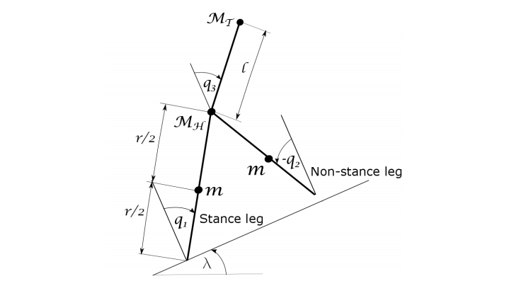

This paper applies a recently developed
geometric PID controller to stabilize a three-link planar
bipedal hybrid dynamic walking robot. The three links
represent the robot torso and two kneeless legs, with an
independent control torque available at each hip joint. The
geometric PID controller is derived for fully actuated
mechanical systems, however in the swing phase the
three-link biped robot has three degrees of freedom and only
two controls. Following the bipedal walking literature,
underactuation is addressed by choosing two “virtual
constraints” to enforce, and verifying the stability of the
resulting two-dimensional zero dynamics. The resulting
controlled dynamics do not have the structure of a mechanical
system, however this structure is restored using “feedback
regularization,” following which geometric PID control is used
to provide robust asymptotic regulation of the virtual
constraints. The proposed method can tolerate significantly
greater variations in inclination, showing the value of the
geometric methods, and the benefit of integral action.

Planar three link biped walker on an inclined plane with lumped
masses consisting of a torso and two equal length legs connected to the
torso at the hip. The coordinates \(q = (q1, q2, q3)\)
T are used to prescribe
the configuration. A control moment is applied at the hip joint between each
leg and the torso.
Numerical simulation results. In left figures desired torso angle is \(110^o\) and in right figures desired
torso angle is \(0^o\)
Bibtex
@inproceedings{weerakoon2018feedback,
title={Feedback Regularization and Geometric PID Control for Robust Stabilization of a Planar Three-link Hybrid Bipedal Walking Model},
author={Weerakoon, WMLT and Madhushani, TWU and Maithripala, DHS and Berg, Jordan M},
booktitle={2018 Annual American Control Conference (ACC)},
pages={6061--6066},
year={2018},
organization={IEEE}
}